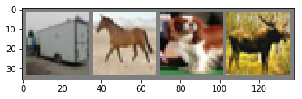
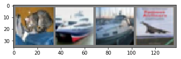

训练分类器
训练分类器¶
我们已经了解了如何定义神经网络，计算损耗并更新网络权重。
现在你可能在想：
有关数据的问题¶
通常，当处理图像、文字、音频或者视频数据的时候，可以使用标准的python包将数据加载到numpy数组中。然后可以将这个数组转换成一个torch.*Tensor。
- 对于图像，Pillow，OpenCV等软件包很有用
- 对于音频，scipy，librosa等包很有用
- 对于文字，直接使用Python或者Cython加载，或者NLTK和SpaCY都可行
视觉很特殊，我们创建了一个名为torchvision的包，它提供了数据加载器torchvision.datasets，可以从常见的数据集加载数据，如Imagenet, CIFAR10, MNIST 等；还提供用于图像的数据转换器torch.utils.data.DataLoader。
这提供了极大的便利而且能够避免编写样板代码。
在本教程中，我们将使用CIFAR10数据集。它有类：‘airplane’, ‘automobile’, ‘bird’, ‘cat’, ‘deer’, ‘dog’, ‘frog’, ‘horse’, ‘ship’,‘truck’。 CIFAR-10中的图像尺寸为3x32x32，即尺寸为32x32像素的3通道彩色图像。

cifar10
训练图像分类器¶
我们将按顺序执行以下步骤：
- 用
torchvision加载并规格化CIFAR10的训练和测试数据集 - 定义卷及神经网络(CNN)
- 定义损失函数
- 使用训练数据训练网络
- 使用测试数据测试网络
1. 加载并规格化CIFAR10¶
用torchvision加载CIFAR10非常容易。
1 2 3 4 5 6 7 | from time import time import torch import torchvision import torchvision.transforms as transforms from tqdm import tqdm |
torchvision数据集的输出是[0,1]区间PILImage图像。我们把它们转换为规格化[-1, 1]区间的张量。
1 2 3 4 5 6 7 8 9 10 11 12 13 14 15 16 | transform = transforms.Compose( [transforms.ToTensor(), transforms.Normalize((0.5, 0.5, 0.5), (0.5, 0.5, 0.5))]) trainset = torchvision.datasets.CIFAR10(root='./data', train=True, download=True, transform=transform) trainloader = torch.utils.data.DataLoader(trainset, batch_size=4, shuffle=True, num_workers=2) testset = torchvision.datasets.CIFAR10(root='./data', train=False, download=True, transform=transform) testloader = torch.utils.data.DataLoader(testset, batch_size=4, shuffle=False, num_workers=2) classes = ('plane', 'car', 'bird', 'cat', 'deer', 'dog', 'frog', 'horse', 'ship', 'truck') |
1 2 | Files already downloaded and verified Files already downloaded and verified |
我们来展示一些训练图像，挺有趣的。
1 2 3 4 5 6 7 8 9 10 11 12 13 14 15 16 17 18 19 20 | import matplotlib.pyplot as plt import numpy as np # functions to show an image def imshow(img): img = img / 2 + 0.5 # unnormalize npimg = img.numpy() plt.imshow(np.transpose(npimg, (1, 2, 0))) # get some random training images dataiter = iter(trainloader) images, labels = dataiter.next() # show images imshow(torchvision.utils.make_grid(images)) # print labels print(' '.join('%5s' % classes[labels[j]] for j in range(4))) |

1 | truck horse dog deer |
2. 定义卷及神经网络(CNN)¶
从前文的神经网络章节复制代码，修改，让它采用3通道图像(而不是之前定义的1通道)
1 2 3 4 5 6 7 8 9 10 11 12 13 14 15 16 17 18 19 20 21 22 23 24 | import torch.nn as nn import torch.nn.functional as F class Net(nn.Module): def __init__(self): super(Net, self).__init__() self.conv1 = nn.Conv2d(3, 6, 5) self.pool = nn.MaxPool2d(2, 2) self.conv2 = nn.Conv2d(6, 16, 5) self.fc1 = nn.Linear(16 * 5 * 5, 120) self.fc2 = nn.Linear(120, 84) self.fc3 = nn.Linear(84, 10) def forward(self, x): x = self.pool(F.relu(self.conv1(x))) x = self.pool(F.relu(self.conv2(x))) x = x.view(-1, 16 * 5 * 5) x = F.relu(self.fc1(x)) x = F.relu(self.fc2(x)) x = self.fc3(x) return x net = Net() |
3. 定义损失函数¶
使用交叉熵损失和带有动量的SGD。
1 2 3 4 | import torch.optim as optim criterion = nn.CrossEntropyLoss() optimizer = optim.SGD(net.parameters(), lr=0.001, momentum=0.9) |
4. 训练网络¶
事情开始变得有趣了。 我们只需循环遍历数据迭代器，并将输入提供给网络并进行优化。
1 2 3 4 5 6 7 8 9 10 11 12 13 14 15 16 17 18 19 20 21 22 23 24 25 | for epoch in range(2): # loop over the dataset multiple times ts = time() running_loss = 0.0 for i, data in enumerate(trainloader, 0): # get the inputs inputs, labels = data # zero the parameter gradients optimizer.zero_grad() # forward + backward + optimize outputs = net(inputs) loss = criterion(outputs, labels) loss.backward() optimizer.step() # print statistics running_loss += loss.item() if i % 2000 == 1999: # print every 2000 mini-batches print('[%d, %5d] loss: %.3f' % (epoch + 1, i + 1, running_loss / 2000)) running_loss = 0.0 print('Epoch {0} finished in {1:.3f} second(s)'.format(epoch, time()-ts)) print('Finished Training') |
1 2 3 4 5 6 7 8 9 10 11 12 13 14 15 | [1, 2000] loss: 2.237 [1, 4000] loss: 1.909 [1, 6000] loss: 1.723 [1, 8000] loss: 1.601 [1, 10000] loss: 1.531 [1, 12000] loss: 1.477 Epoch 0 finished in 75.642 second(s) [2, 2000] loss: 1.404 [2, 4000] loss: 1.372 [2, 6000] loss: 1.347 [2, 8000] loss: 1.353 [2, 10000] loss: 1.296 [2, 12000] loss: 1.263 Epoch 1 finished in 72.981 second(s) Finished Training |
5. 使用测试数据对网络进行测试¶
在训练数据集上已经对网络进行了两个纪元(epoch)的训练。 但是我们还要进行检查，看看这个网络是否真的学会了什么。
用这个神经网络进行预测，检查它输出的分类标签是否和实际值一直。如果预测正确，把样本加到正确预测列表。
好了，第一步先从测试集显示一个图像，熟悉一下。
1 2 3 4 5 6 | dataiter = iter(testloader) images, labels = dataiter.next() # print images imshow(torchvision.utils.make_grid(images)) print('GroundTruth: ', ' '.join('%5s' % classes[labels[j]] for j in range(4))) |
1 | GroundTruth: cat ship ship plane |

好的，现在让我们看看神经网络认为上面这些例子是什么：
1 | outputs = net(images) |
输出值是10重类型的能量值。 一个类型的能量值越高，就表明网路越倾向于认为图片是这种类型的。 那么，让我们得到最高能量值的序号：
1 2 3 4 | _, predicted = torch.max(outputs, 1) print('Predicted: ', ' '.join('%5s' % classes[predicted[j]] for j in range(4))) |
1 | Predicted: cat ship ship ship |
结果似乎还行。
让我们看看这个网络如何预测整个测试数据集。
1 2 3 4 5 6 7 8 9 10 11 12 | correct = 0 total = 0 with torch.no_grad(): for data in tqdm(testloader): images, labels = data outputs = net(images) _, predicted = torch.max(outputs.data, 1) total += labels.size(0) correct += (predicted == labels).sum().item() print('Accuracy of the network on the 10000 test images: %d %%' % ( 100 * correct / total)) |
1 2 3 | 100%|██████████| 2500/2500 [00:05<00:00, 420.29it/s] Accuracy of the network on the 10000 test images: 53 % |
看起来比随便猜(从10个类型中随机选一个的准确度是10%)强。 这个网络似乎学会了一些东西。
嗯，哪些类型表现好，哪些不好：
1 2 3 4 5 6 7 8 9 10 11 12 13 14 15 16 17 | class_correct = list(0. for i in range(10)) class_total = list(0. for i in range(10)) with torch.no_grad(): for data in tqdm(testloader): images, labels = data outputs = net(images) _, predicted = torch.max(outputs, 1) c = (predicted == labels).squeeze() for i in range(4): label = labels[i] class_correct[label] += c[i].item() class_total[label] += 1 for i in range(10): print('Accuracy of %5s : %2d %%' % ( classes[i], 100 * class_correct[i] / class_total[i])) |
1 2 3 4 5 6 7 8 9 10 11 12 | 100%|██████████| 2500/2500 [00:05<00:00, 418.22it/s] Accuracy of plane : 29 % Accuracy of car : 68 % Accuracy of bird : 28 % Accuracy of cat : 42 % Accuracy of deer : 43 % Accuracy of dog : 45 % Accuracy of frog : 70 % Accuracy of horse : 56 % Accuracy of ship : 81 % Accuracy of truck : 73 % |
好的，接下来呢？
我们如何在GPU上运行这些神经网络？
在GPU上训练¶
就像将Tensor转到GPU一样，可将神经网络转到GPU。
如果有可用的CUDA，我们首先获取第一个可见的cuda设备：
1 2 3 4 5 | device = torch.device("cuda:0" if torch.cuda.is_available() else "cpu") # Assuming that we are on a CUDA machine, this should print a CUDA device: print(device) |
1 | cuda:0 |
本节的其余部分假定device是一个CUDA设备。
然后这些方法将递归遍历所有模块并将其参数和缓冲区转换为CUDA张量：
1 | net.to(device) |
记住还得将每一步的输入和目标发送到GPU：
1 | inputs, labels = inputs.to(device), labels.to(device) |
可能观察不到与CPU相比的有明显加速，那是因为的网络太小。
练习¶
尝试增加网络的宽度（第一个nn.Conv2d的第二个参数，第二个nn.Conv2d的第一个参数——它们应是相同的数值），看看能获得什么样的加速。
达到的目标：
- 在高层次上理解PyTorch的Tensor库和神经网络。
- 训练一个小型的图像分类神经网络
1 2 3 4 5 6 7 8 9 10 11 12 13 14 15 16 17 18 19 20 21 22 23 24 25 26 27 28 29 30 31 32 33 34 35 36 37 38 39 40 41 42 43 44 45 46 47 48 49 50 | class Net2(nn.Module): def __init__(self): super().__init__() self.conv1 = nn.Conv2d(3, 12, 5) self.pool = nn.MaxPool2d(2, 2) self.conv2 = nn.Conv2d(12, 16, 5) self.fc1 = nn.Linear(16 * 5 * 5, 120) self.fc2 = nn.Linear(120, 84) self.fc3 = nn.Linear(84, 10) def forward(self, x): x = self.pool(F.relu(self.conv1(x))) x = self.pool(F.relu(self.conv2(x))) x = x.view(-1, 16 * 5 * 5) x = F.relu(self.fc1(x)) x = F.relu(self.fc2(x)) x = self.fc3(x) return x net2 = Net2() net2.to(device) for epoch in range(2): # loop over the dataset multiple times ts = time() running_loss = 0.0 for i, data in enumerate(trainloader, 0): # get the inputs inputs, labels = data inputs, labels = inputs.to(device), labels.to(device) # zero the parameter gradients optimizer.zero_grad() # forward + backward + optimize outputs = net2(inputs) loss = criterion(outputs, labels) loss.backward() optimizer.step() # print statistics running_loss += loss.item() if i % 2000 == 1999: # print every 2000 mini-batches print('[%d, %5d] loss: %.3f' % (epoch + 1, i + 1, running_loss / 2000)) running_loss = 0.0 print('Epoch {0} finished in {1:.3f} second(s)'.format(epoch, time()-ts)) print('Finished Training') |
1 2 3 4 5 6 7 8 9 10 11 12 13 14 15 | [1, 2000] loss: 2.305 [1, 4000] loss: 2.304 [1, 6000] loss: 2.304 [1, 8000] loss: 2.304 [1, 10000] loss: 2.303 [1, 12000] loss: 2.305 Epoch 0 finished in 72.346 second(s) [2, 2000] loss: 2.304 [2, 4000] loss: 2.304 [2, 6000] loss: 2.304 [2, 8000] loss: 2.303 [2, 10000] loss: 2.304 [2, 12000] loss: 2.305 Epoch 1 finished in 63.276 second(s) Finished Training |
在多个GPU上进行训练¶
如果想使用所有的GPU来大幅加速，请参考 data_parallel_tutorial。
下一步怎么办？¶
- :doc:
Train neural nets to play video games </intermediate/reinforcement_q_learning> Train a state-of-the-art ResNet network on imagenet_Train a face generator using Generative Adversarial Networks_Train a word-level language model using Recurrent LSTM networks_More examples_More tutorials_Discuss PyTorch on the Forums_Chat with other users on Slack_
1 |